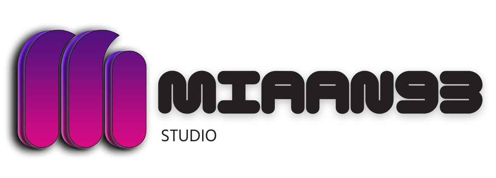

Website & Landing Page
Halaman promosi, profil usaha, company profile sederhana, dan penawaran jasa yang rapi.
Partner Pengembangan Aplikasi Custom untuk Bisnis Indonesia
Miaan93 Digital Studio membantu merancang dan membangun aplikasi web, backend, mobile, serta fitur berbasis AI untuk operasional bisnis. Dari dashboard admin, manajemen data, tagihan, laporan, notifikasi, pembayaran online, hingga deploy.
Proses dibuat transparan sejak konsultasi, perencanaan fitur, pengerjaan, testing, sampai aplikasi siap digunakan.

Layanan Miaan
Miaan membantu membuat aplikasi baru, mengembangkan fitur lanjutan, sampai merawat aplikasi setelah rilis agar tetap bisa digunakan dengan nyaman.
Halaman promosi, profil usaha, company profile sederhana, dan penawaran jasa yang rapi.
Server, database, autentikasi, role user, dan REST API untuk kebutuhan aplikasi bisnis.
Panel untuk mengelola data, user, transaksi, laporan, dan aktivitas operasional.
Aplikasi Android berbasis Flutter untuk operasional, monitoring, input data, atau layanan pelanggan.
Integrasi pembayaran online, invoice, status transaksi, dan skema langganan.
Pengingat tagihan, update status, dan informasi penting melalui notifikasi aplikasi.
Chatbot, assistant internal, pencarian pintar, ringkasan otomatis, dan analisis data sederhana.
Perawatan aplikasi setelah rilis, perbaikan bug, update kecil, penyesuaian fitur, dan pengembangan bertahap.
Nilai Kerja
Kami memulai dari masalah bisnis yang ingin diselesaikan, lalu menerjemahkannya menjadi fitur yang benar-benar berguna.
Scope, prioritas, dan alur pengerjaan dibahas sejak awal agar ekspektasi lebih mudah disamakan.
Stack dipilih berdasarkan jenis aplikasi, kebutuhan integrasi, dan rencana pengembangan jangka panjang.
Project bisa dimulai dari fitur inti terlebih dahulu, kemudian diperluas saat bisnis mulai membutuhkan modul tambahan.
Diskusi dibuat praktis: membahas keputusan fitur, kendala, dan progress tanpa proses yang berbelit.
Solusi dirancang untuk konteks lokal seperti UMKM, pemilik kos, toko, jasa, dan operasional internal.
Solusi Digital
Pengerjaan
Membangun REST API, autentikasi, role user, validasi data, serta koneksi ke database dan service lain.
Membuat aplikasi Android dengan Flutter untuk aktivitas lapangan, input data, monitoring, atau akses pelanggan.
Panel pengelolaan data, user, transaksi, laporan, dan aktivitas harian dalam satu tempat.
Menghubungkan aplikasi dengan pembayaran online, invoice, status transaksi, dan skema langganan.
Mengirim reminder, update status, atau informasi penting melalui notifikasi aplikasi.
Menambahkan chatbot, ringkasan otomatis, pencarian pintar, rekomendasi, analisis data, atau assistant berbasis data aplikasi.
Menyiapkan aplikasi di platform online agar dapat diakses, diuji, dan digunakan oleh pengguna.
Kompetensi Teknis
Miaan menangani komponen penting seperti API, database, mobile app, dashboard, notifikasi, pembayaran online, dan fitur AI berbasis data aplikasi.
Setiap modul dibuat dengan struktur yang jelas agar mudah dipahami, dirawat, dan ditingkatkan saat kebutuhan operasional berkembang.
Stack
Alur Pengerjaan
Kita bahas masalah utama, target pengguna, dan hasil yang ingin dicapai.
Fitur dipilah menjadi prioritas utama, tambahan, dan integrasi pendukung.
Sistem dibangun mulai dari struktur data, API, antarmuka, sampai integrasi yang diperlukan.
Alur penting dicek untuk memastikan input, proses, dan output berjalan konsisten.
Penyesuaian dilakukan berdasarkan masukan yang masih berada dalam scope project.
Project dipasang ke platform online dan dicek kembali setelah proses upload selesai.
Estimasi Biaya
Untuk profil usaha, promosi jasa, company profile sederhana, dan halaman penawaran.
Untuk aplikasi dengan login, CRUD data, dashboard sederhana, dan database.
Untuk sistem bisnis dengan backend, mobile app, dashboard, laporan, notifikasi, pembayaran, fitur AI, dan deploy tergantung kerumitan sistem yang dibuat sesuai keinginan dan biaya bisa lebih.
Harga mengikuti scope fitur, tingkat kesulitan, jenis integrasi, dan estimasi waktu pengerjaan. Maintenance, perbaikan bug, dan pengembangan lanjutan dapat dibahas setelah aplikasi selesai atau sesuai kebutuhan project. Konsultasi awal gratis.
Profil Singkat
Miaan93 Digital Studio adalah studio pengembangan aplikasi yang lahir dari antusiasme terhadap teknologi dan semangat untuk membantu bisnis Indonesia beradaptasi secara digital.
Fokus kami ada pada aplikasi web, backend, mobile, dan solusi berbasis AI yang membantu proses kerja menjadi lebih tertata.
Bagi kami, aplikasi yang baik bukan hanya terlihat menarik, tetapi juga punya logika sistem yang jelas, fitur yang relevan, dan pengalaman pakai yang nyaman.
Setiap project dikerjakan dengan pendekatan terarah: memahami konteks bisnis, menyusun fitur, membangun sistem, melakukan testing, lalu menyiapkan rilis.
Kepuasan klien menjadi prioritas utama. Karena itu, ruang diskusi dan revisi disiapkan sesuai kesepakatan agar hasil akhir lebih tepat guna.
Mulai Diskusi
Jangan malu untuk konsultasi tentang ide fitur, alur bisnis, rancangan sistem, maintenance aplikasi yang sudah ada, atau kebingungan teknis apa pun. Miaan siap meluangkan waktu untuk mendengarkan dan membantu menyusun arah awal aplikasi Anda.